Debugging a Windows executable locally and remotely
Debugging a Windows executable locally and remotely
Last updated on September 01, 2020 - v0.2
This short tutorial introduces the main functionality of the IDA Debugger on Windows. IDA supports debugging of various binaries on various platforms, locally and remotely, but in this tutorial we will focus on debugging regular applications running on Windows.
Let’s see how the debugger can be used to locally debug a simple buggy C console program compiled under Windows.
Please use sample.exe.idb from samples.zip:
{% file src=“samples.zip” %}
to follow this tutorial.
The buggy program
This program computes averages of a set of values (1, 2, 3, 4 and 5). Those values are stored in two arrays: one containing 8 bit values, the other containing 32-bit values.
#include <stdio.h>
char char_average(char array[], int count)
{
int i;
char average;
average = 0;
for (i = 0; i < count; i++)
average += array[i];
average /= count;
return average;
}
int int_average(int array[], int count)
{
int i, average;
average = 0;
for (i = 0; i < count; i++)
average += array[i];
average /= count;
return average;
}
void main(void)
{
char chars[] = { 1, 2, 3, 4, 5 };
int integers[] = { 1, 2, 3, 4, 5 };
printf("chars[] - average = %d\n",
char_average(chars, sizeof(chars)));
printf("integers[] - average = %d\n",
int_average(integers, sizeof(integers)));
}
Running this program gives us the following results:
>sample.exe
chars[] - average = 3
integers[] - average = -65498543
Obviously, the computed average on the integer array is wrong. Let us use the IDA debugger to understand the origin of this error.
Loading the file
The debugger is completely integrated into IDA: to debug, we usually load the executable into IDA and create a database. We can disassemble the file interactively, and all the information which he will have added to the disassembly will be available during debugging. If the disassembled file is recognized as debuggable, the Debugger menu automatically appears in main window:
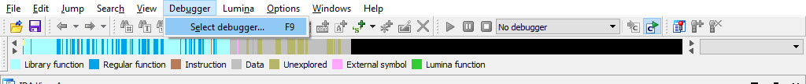
Since IDA has many debugger backends, we have to select the desired backend. We will use Local Windows debugger in our tutorial:
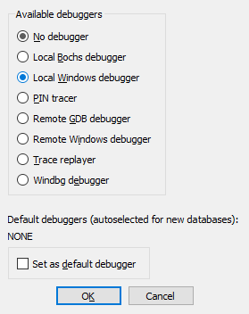
Instruction breakpoints
Once we located our int_average() function in the disassembly (it is at 0x40104A), we can add a breakpoint at its entry point, by selecting the Add breakpoint command in the popup menu, or by pressing the F2 key:
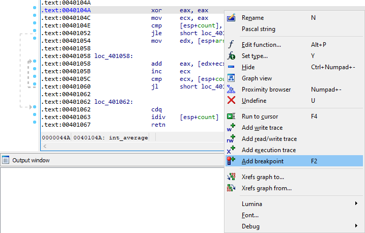
Program execution
Now we can start the execution. We can launch the debugger by pressing the F9 key or by clicking the Start button in the debugger toolbar. IDA displays a big warning message before really starting the debugger:
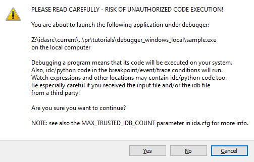
Indeed, running untrusted binaries on your computer may compromise it, so you should never run them. Since in our tutorial we are playing with a toy sample, it is okay, we can accept him. However, please consider using remote debugging for untrusted binaries.
Once we accept it, the program runs until it reaches our breakpoint:
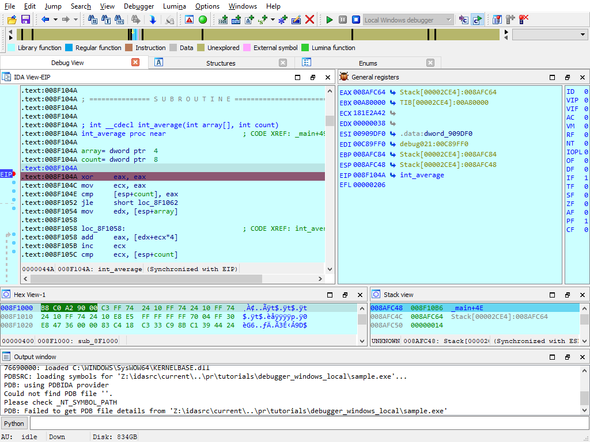
Address evaluation
By analyzing the disassembled code, we can now locate the loop which computes the sum of the values, and stores the result in EAX. The [edx+ecx*4] operand clearly shows us that EDX points to the array and ECX is used as an index in it. Thus, this operand will successively point to each integer from the integers array:
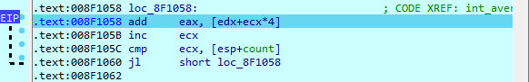
Step by step and jump targets
Let us advance step by step in the loop, by clicking on the adequate button in the debugger toolbar or by pressing the F8 key. If necessary, IDA draws a green arrow to show us the target of a jump instruction:
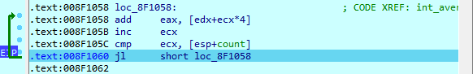
The bug uncovered
Now, let’s have a look at value of [esp+count]. The ECX register (our index in the array) is compared to this register at each iteration: so, we can conclude that it is used as a counter in the loop. But, we also observe that it contains a rather strange number of elements: 14h (= 20). Remember that our original array contains only 5 elements! It seems we just found the source of our problem…
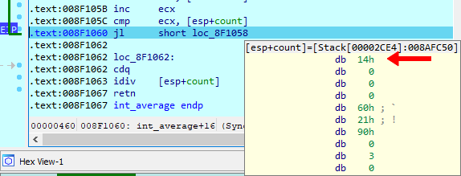
Hardware breakpoints
To be sure, let us add a hardware breakpoint, just behind the last value of our integers array (in fact, on the first value of the chars array). If we reach this breakpoint during the loop, it will indeed prove that we read integers outside our array. For that jump to EDX, which points to the array, by clicking on a small arrow in the CPU register view:
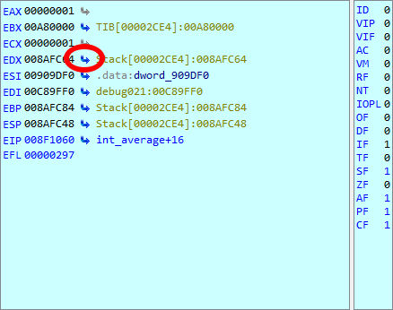
IDA displays a sequence of bytes, so we need to create an array. Do the following:
- press Alt-D, D to create a doubleword
- press * and specify the size of 5 elements
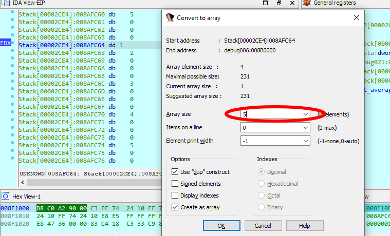
Let us add a hardware breakpoint with a size of 4 bytes (the size of an integer) in Read/Write mode immediately after our array. Please note that the cursor is located after the array we created:
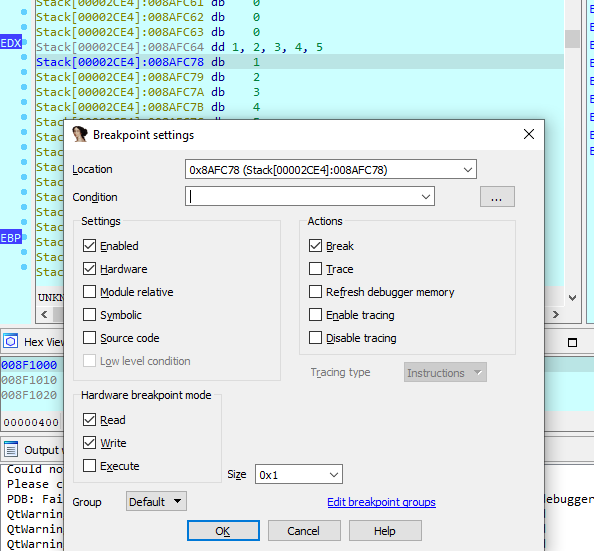
As foreseen, if we continue the execution, the hardware breakpoint detects a read access to the first byte of the chars array.
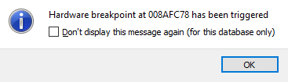
Please note that EIP points to the instruction following the one which caused the hardware breakpoint! It is in fact rather logical: to cause the hardware breakpoint, the preceding instruction has been fully executed, so EIP now points to the next one.
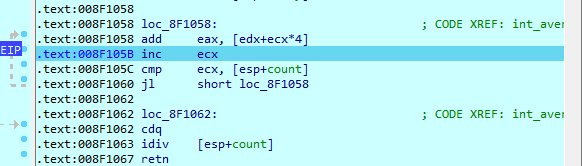
Caller’s mistake
By looking at the disassembly, we see that the value stored in [esp+count] comes from the count argument of our int_average() function. Let us try to understand why the caller gives us such a strange argument: if we go the call of int_average(), we easily locate the push 14h instruction, passing an erroneous count value to our function.
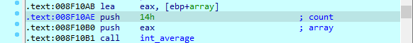
Now, by looking closer at the C source code, we understand our error: we used the sizeof() operator, which returns the number of bytes in the array, rather than returning the number of items in it! As, for the chars array, the number of bytes was equal to the number of items, we didn’t notice the error…
Debugging a remote process
Our debuggers support debugging processes running on a remote computer. We just need to set up a remote debugging session and then we can debug the same way as in local debugging. Let us consider the following three simple steps.
Starting the remote server
Regardless of the platform where IDA itself runs (be it Windows, Mac, or Linux), we need to launch a remote debugger server on the computer where the remotely debugged application will run.
For Windows, we have two different debugger servers:
- for 32-bit programs, use win32_remote.exe
- for 64-bit programs, use win64_remote64.exe
So, we copy the relevant debugger server to the remote computer and launch it:
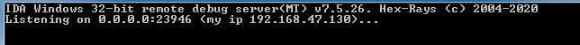
If the debugger server is accessible by others, it is a good idea to use a password for the connection (the -P command line option).
Once this is done, we can return to the local computer, where we will run IDA, and configure it.
Configuring IDA to connect to the remote server
We have to select the Remote Windows debugger:
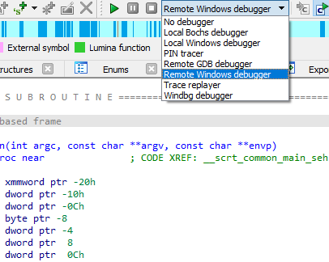
and specify the correct values in the Debugger > Process options dialog:
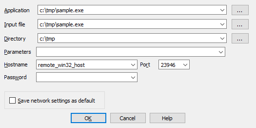
Please note that the Application, Input file, and Directory must be correct on the remote computer. We may eventully specify command line arguments for the application in the Parameters field.
If you have specified a password when launching the remote debugger server, you must specify it in the Password field.
Starting a debug session
Once we have configured IDA, the rest is the same as with local debugging: press F9 to start a debugging session.
Attaching to a running process
In some cases we cannot launch the debugged process ourselves. Instead, we need to attach to an existing process. This is possible and very easy to do: just select Debugger > Attach to process from the menu and select the desired process.
Other features
IDA debugger gives you access to the entire process memory, allowing you to use all powerful features: you can create structure variables in memory, draw graphs, create breakpoints in DLLs, define and decompile functions, etc. It is even possible to single step in the pseudocode window, if you have the decompiler installed!
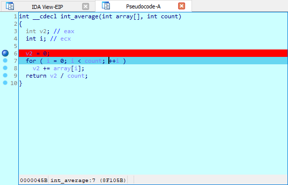
The way the debugger reacts to exceptions is fully configurable by the user. The user can select various Actions to be performed when the breakpoint is hit. An IDC or Python can be executed upon hitting a breakpoint:
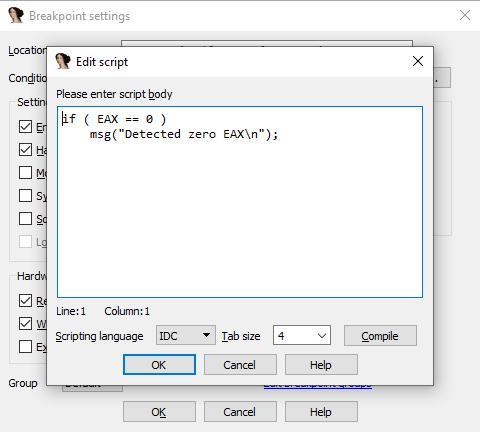
We invite you to play with the debugger and discover its many unique and powerful features!